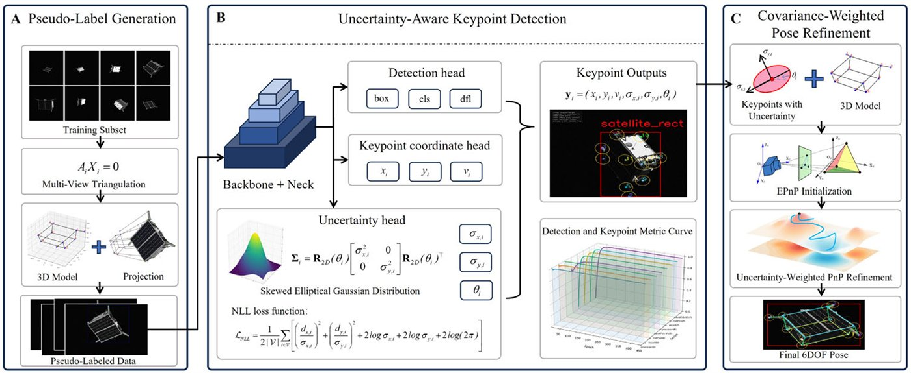
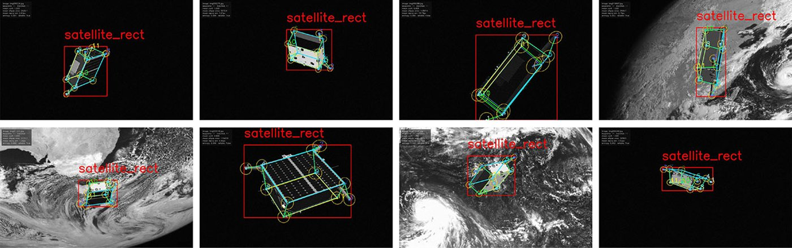
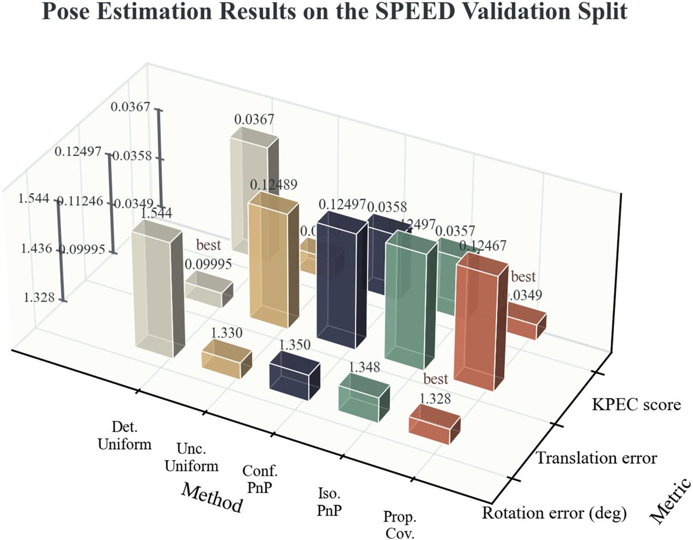

课题组论文被 Aerospace Systems 接收：用协方差加权关键点做不确定性感知的单目航天器位姿估计
翟峰同学作为第一作者的研究成果 Uncertainty-aware monocular spacecraft pose estimation with covariance-weighted keypoints 被 Aerospace Systems（上海交通大学出版社）接收（2026 年 9 月 20 日）。该工作不再把检测到的 2D 关键点当成确定性观测，而是为每个关键点预测完整的各向异性协方差，并把这一不确定性直接带入 PnP 位姿优化。在 SPEED 验证集上，方法取得 0.1246 m 的平均平移误差与 1.3284° 的平均旋转误差，真实图像测试的 KPEC 分数位列赛后提交前三。

问题：弱纹理与强反光下，关键点误差有方向
非合作目标的交会、近距离巡检与在轨服务都依赖单目 6 自由度位姿估计。单张图像没有直接深度信息，而星载图像又常出现弱纹理、尺度变化大、局部遮挡与剧烈光照变化，此时手工特征与学习特征都可能失效。现有基于关键点 + PnP 的学习方法通常把检测结果视为确定值，或只给一个标量置信度，无法描述误差在不同方向上并不相同这一事实——例如沿卫星本体边缘方向定位较准、垂直方向偏差较大。
方法：为每个关键点学习一个完整协方差
- 各向异性不确定性建模：每个 2D 关键点用完整的 2×2 协方差矩阵表示，由三元组 (σx, σy, θ) 参数化，可刻画误差的方向与幅度，而非各向同性的圆。
- 检测网络：在 YOLO 检测框架上增加不确定性头，与坐标头共享骨干与颈部特征；用高斯负对数似然损失监督协方差预测（并做斜椭圆高斯分布可视化验证）。
- 协方差加权位姿优化：先用 EPnP/RANSAC 得到初始位姿，再以协方差白化后的重投影残差为目标做鲁棒非线性优化，让可靠的关键点权重更大、方向性误差被正确折算。
- 伪标签生成：利用三维模型与多视图三角化构造伪标签数据，缓解真实星载图像标注稀缺的问题。

结果：旋转精度提升，真实图像进入前三
- SPEED 验证集上平均平移误差 0.1246 m、平均旋转误差 1.3284°，优于确定性基线的 1.5438°。
- KPEC 分数：合成测试集 0.038428，真实测试集 0.123492；真实图像成绩在赛后提交中位列前三。
- 消融实验表明，只有把完整的各向异性协方差送入 PnP 优化，才能获得最好效果；标量置信度加权与各向同性方差加权的收益都更有限。
- 关键点检测质量未因引入不确定性监督而下降，mAP@0.5 为 0.995。
- 模型 58.803 M 参数、112.873 MB，在 RTX 4060 Ti 上完成训练与测试，具备进一步向机载平台迁移的基础。
